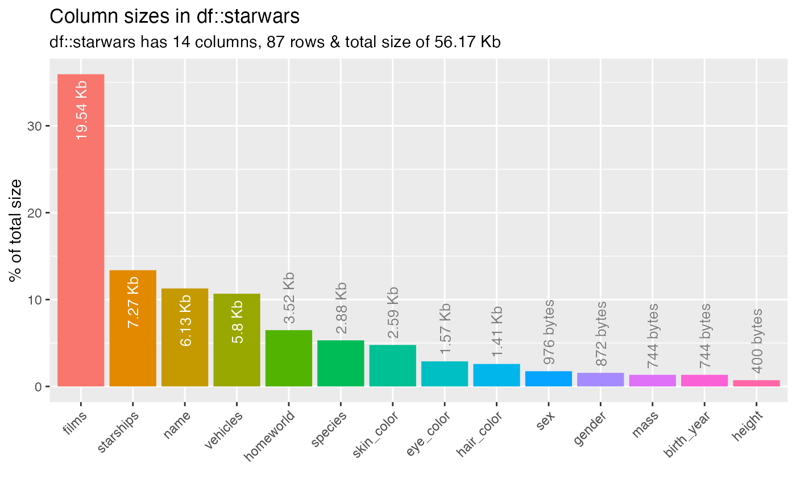

Visualise summaries and comparisons of one or two dataframes.
show_plot.RdVisualise summaries and comparisons of one or two dataframes.
show_plot(x, text_labels = TRUE, alpha = 0.05, high_cardinality = 0, plot_layout = NULL, col_palette = 0, plot_type = "bar", label_thresh = 0.1)
Arguments
| x | Dataframe resulting from a call to an `inspect_` function. |
|---|---|
| text_labels | Whether to show text annotation on plots (when |
| alpha | Alpha level for performing significance tests. Defaults to 0.05. |
| high_cardinality | Minimum number of occurrences of category to be shown as a distinct segment
in the plot ( |
| plot_layout | Vector specifying the number of rows and columns
in the plotting grid. For example, 3 rows and 2 columns would be specified as
|
| col_palette | Integer indicating the colour palette to use. - `0`: (default) `ggplot2` color palette - `1`: a [colorblind friendly palette](http://www.cookbook-r.com/Graphs/Colors_(ggplot2)/) - `2`: [80s theme](https://www.color-hex.com/color-palette/25888) - `3`: [rainbox theme](https://www.color-hex.com/color-palette/79261) - `4`: [mario theme](https://www.color-hex.com/color-palette/78663) - `5`: [pokemon theme](https://www.color-hex.com/color-palette/78664) |
| plot_type | String determining the type of plot to show. Defaults to `"bar"`. |
| label_thresh | Minimum percentage frequency of category for a text label to be shown. Defaults to 0.1. Smaller values will show potentially smaller labels, but at the expense of longer rendering time. |
Examples
# Load 'starwars' data data("starwars", package = "dplyr") # categorical plot x <- inspect_cat(starwars) show_plot(x)